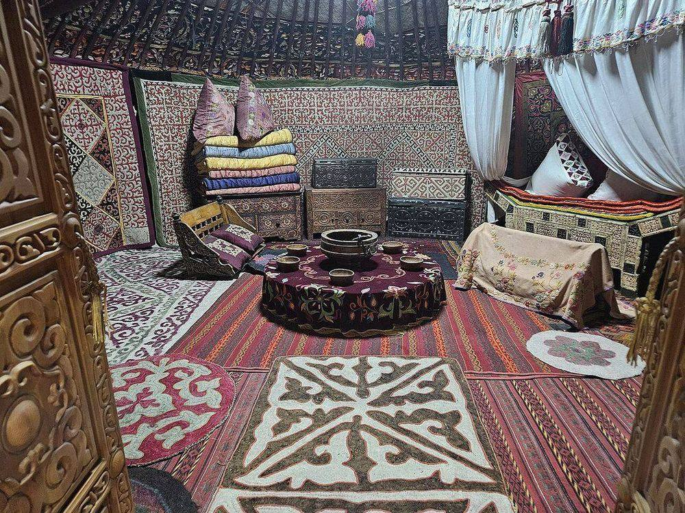
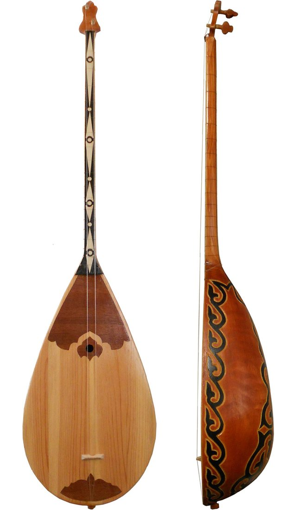
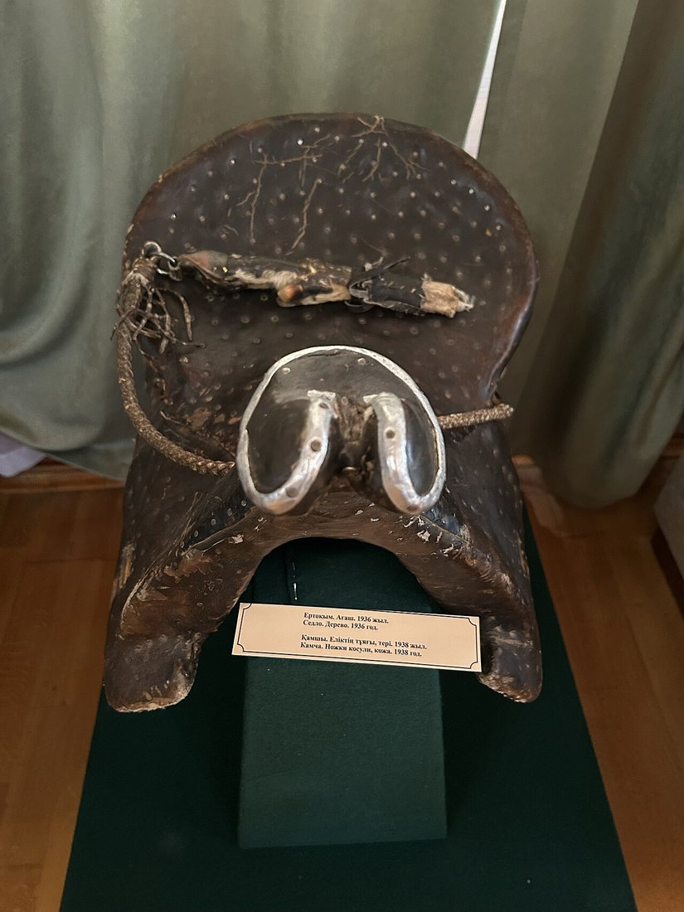
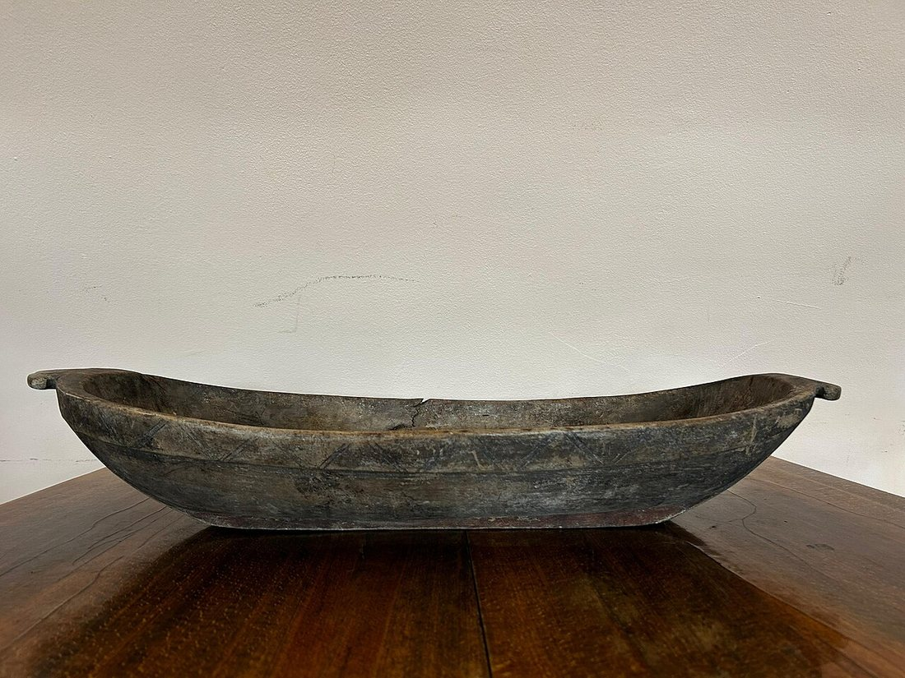
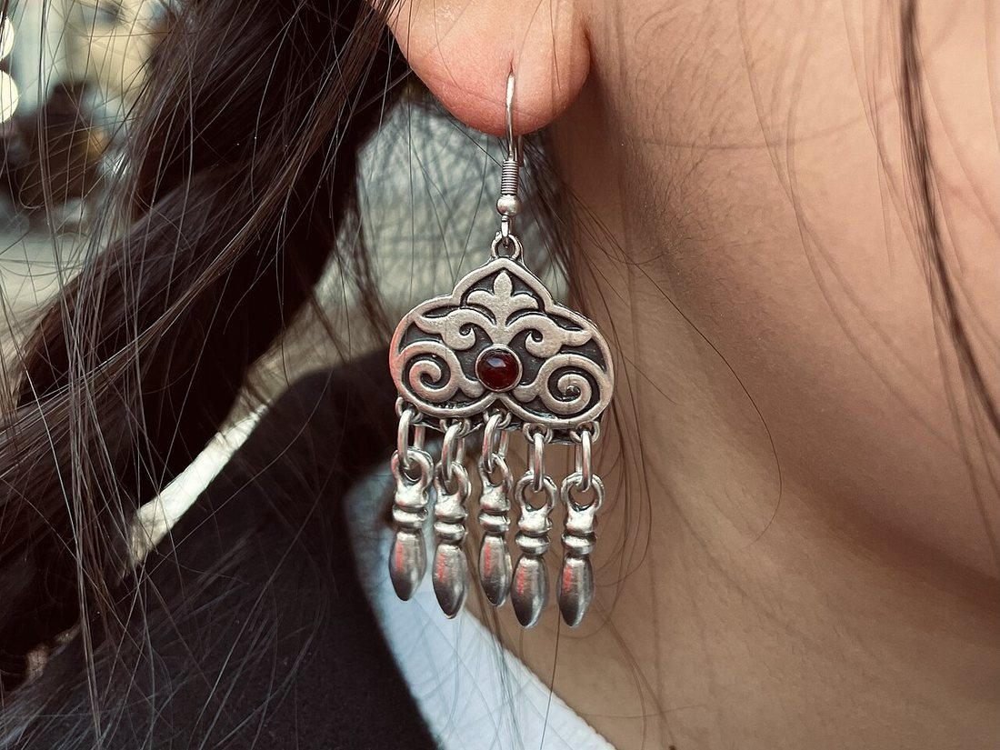

Көркем еңбек (ұлдар) · 5-бөлім · Дизайн және қолөнер Art & Craft (Boys) · Section 5 · Design & Crafts Художественный труд (мальчики) · Раздел 5 · Дизайн и ремёсла
Қазақтың ұлттық қолөнері (ағаш, сүйек, металл)
Kazakh National Crafts (Wood, Bone, Metal)
Казахские национальные ремёсла (дерево, кость, металл)
Шебердің қолынан шыққан ою-өрнек: ағашты ою, сүйекпен әшекейлеу және күміс зергерлік өнері. The master's ornament in three materials: wood carving, bone inlay and silver jewellery. Орнамент в руках мастера: резьба по дереву, инкрустация костью и серебряное зергерство.
Көшпелі халықтың қолөнері
Crafts of a Nomadic People
Ремёсла кочевого народа
Қазақтың дәстүрлі қолөнері — көшпелі тұрмыстың айнасы. Бұйымдар жеңіл, берік әрі әсем болуы керек еді: оларды киіз үймен бірге көшіріп жүрді. Шебер табиғи материалдан — ағаштан, сүйектен, металдан — күнделікті бұйым жасап, оны ұлттық ою-өрнекпен әшекейледі. Әр өрнектің мәні бар: қошқар мүйіз — байлық пен молшылық, су өрнегі — өмір, тұмарша — қорғаныш белгісі. Осылай еңбек құралы әрі өнер туындысы бір бұйымда тоғысты.
Traditional Kazakh craft is a mirror of nomadic life. Objects had to be light, strong and beautiful, because they travelled with the yurt. From natural materials — wood, bone and metal — the master made everyday items and decorated them with national ornament. Every motif carries meaning: the ram's horn (qoshqar müiz) stands for wealth, the water pattern for life, the tumarsha (triangle) is a protective amulet. So a tool and a work of art met in a single object.
Традиционное казахское ремесло — это зеркало кочевой жизни. Изделия должны были быть лёгкими, прочными и красивыми, ведь они кочевали вместе с юртой. Из природных материалов — дерева, кости и металла — мастер делал бытовые вещи и украшал их национальным орнаментом. Каждый узор несёт смысл: «кошкар муйиз» (бараний рог) — достаток, узор воды — жизнь, «тумарша» (треугольник) — оберег. Так в одном предмете встречались инструмент и произведение искусства.
Ағаш ұстасы — ағашшы
Woodworker — agashshy
Резчик — «агашшы»
Зергер — күміс шебері
Zerger — silversmith
Зергер — ювелир
Ұста — темір ұстасы
Usta — blacksmith
Уста — кузнец

Үш материал — үш өнер Three Materials — Three Arts Три материала — три искусства
Ағаш — ою өнері Wood — Carving Дерево — резьба
Қайың, терек, арша мен тал — киіз үй сүйегіне, жиһазға және ыдысқа айналды. Шебер кебеже (азық сақтайтын жәшік), сандық, асадал (ыдыс қоятын шкаф), астау (ағаш науа), домбыра жасады. Ою ойып, бояумен немесе сүйекпен әшекейледі. Birch, poplar, juniper and willow became the frame of the yurt, furniture and dishware. The master made the kebezhe (food chest), sandyq (trunk), asadal (dish cupboard), astau (wooden trough) and the dombra. The surface was carved and finished with paint or bone inlay. Берёза, тополь, арча и ива становились каркасом юрты, мебелью и посудой. Мастер делал кебеже (ларь для еды), сандык (сундук), асадал (шкаф для посуды), астау (деревянное корыто) и домбру. Поверхность покрывали резьбой, росписью или инкрустацией костью.
Сүйек — әшекей Bone — Inlay Кость — инкрустация
Мал сүйегі мен мүйіз тегіс әрі ақ болғандықтан, оны қашап, жұқа табақша етіп кесіп, ағаш бетіне қаққан. Домбыраның мойны, кебеже мен сандықтың бұрыштары, ер-тұрман, пышақ сабы осы әдіспен безендірілді. Қара ағашпен қатар ақ сүйек — әсем қарама-қайшылық берді. Animal bone and horn are smooth and white, so they were cut into thin plates and set into the wood. The neck of the dombra, the corners of the kebezhe and sandyq, saddles and knife handles were decorated this way. Against dark wood the white bone gave a striking contrast. Кость и рог животных гладкие и белые, поэтому их резали тонкими пластинами и врезали в дерево. Так украшали гриф домбры, углы кебеже и сандыка, сёдла, рукояти ножей. На тёмном дереве белая кость давала эффектный контраст.
Металл — зергерлік Metal — Jewellery Металл — зергерство
Зергер күміспен жұмыс істеді: соғу, құю, өрнек ою (қашау), қаралту (зерниль), асыл тас орнату. Әйелдер әшекейі — сырға, білезік, сақина, шолпы, алқа, ер адамдікі — белбеу мен пышап қыны. Күміс «таза» металл саналып, тұмар ретінде де тағылды. The zerger worked mainly in silver: forging, casting, engraving, blackening (niello) and setting stones. Women's pieces — earrings, bracelets, rings, sholpy (hair pendants), necklaces; men's — belts and knife sheaths. Silver was seen as a "pure" metal and worn as an amulet too. Зергер работал в основном с серебром: ковка, литьё, гравировка, чернение (зерниль), вставка камней. Женские украшения — серьги, браслеты, кольца, шолпы (накосники), алка; мужские — пояса и ножны. Серебро считалось «чистым» металлом и носилось как оберег.
Мұражай бұйымдары Museum Pieces Музейные изделия
Үлкейту үшін суретті басыңыз. Click an image to enlarge. Нажмите на фото, чтобы увеличить.




Ою-өрнектің тілі The Language of Ornament Язык орнамента
Қандай материал болса да, шебер бірдей өрнек тілін қолданды. Негізгі топтар: мүйізтектес (қошқар мүйіз, сыңар мүйіз), өсімдіктектес (гүл, жапырақ), геометриялық (тұмарша, ирек), космогониялық (күн, шеңбер). Сол бір өрнек ағашқа да ойылды, күміске де қашалды, сүйекке де түсірілді — бұл қолөнерді біртұтас ұлттық стильге айналдырды. Whatever the material, the master used one shared visual language. The main families are: horn-type (ram's horn, single horn), plant-type (flower, leaf), geometric (triangle amulet, zigzag) and cosmogonic (sun, circle). The same motif was carved in wood, engraved in silver and set in bone — which made the crafts one unified national style. С каким бы материалом ни работал мастер, он пользовался единым языком узора. Главные группы: роговидные (бараний рог, одиночный рог), растительные (цветок, лист), геометрические (тумарша-треугольник, зигзаг) и космогонические (солнце, круг). Один и тот же мотив резали по дереву, гравировали по серебру и врезали в кость — это делало ремёсла единым национальным стилем.
Ағаш бұйымын жасау жолы How a Wooden Item Is Made Как создаётся деревянное изделие
Ағашты таңдау және кептіру Choosing and drying the wood Выбор и сушка дерева
Жарылмайтын, тегіс талшықты ағаш (қайың, терек, арша) алынып, бірнеше ай көлеңкеде кептіріледі. A non-cracking, straight-grained wood (birch, poplar, juniper) is chosen and dried in shade for months. Берут не трескающееся дерево с ровным волокном (берёза, тополь, арча) и месяцами сушат в тени.
Пішін беру Rough shaping Грубая обработка формы
Балта, шот және қашаумен бұйымның негізгі пішіні шығарылады (мысалы, астаудың ішін қашау). With an axe, adze and gouge the basic shape is cut out (for example, hollowing the inside of a trough). Топором, теслом и стамеской вытёсывается основная форма (например, выдалбливается нутро корыта).
Ою салу Carving the ornament Нанесение резьбы
Бетіне өрнек сызылып, әртүрлі қашаумен терең/жалпақ ою ойылады (қошқар мүйіз, су өрнегі). The pattern is drawn on the surface and carved with various chisels in relief or flat cuts. На поверхность наносят рисунок и режут разными резцами рельефную или плоскую резьбу.
Сүйек/металмен әшекейлеу Bone / metal decoration Украшение костью / металлом
Қажет жерге сүйек табақшасы немесе күміс пластина орнатылып, желіммен/қадамен бекітіледі. Bone plates or silver inserts are fitted into prepared recesses and fixed with glue or tiny nails. В подготовленные гнёзда вставляют костяные пластины или серебряные накладки на клей/гвоздики.
Тегістеу мен майлау Sanding and oiling Шлифовка и пропитка
Бет тегістеліп, май немесе табиғи лакпен сүртіледі — ағаш суға төзімді әрі жылтыр болады. The surface is sanded smooth and rubbed with oil or natural varnish for water-resistance and shine. Поверхность шлифуют и протирают маслом или натуральным лаком — для влагостойкости и блеска.
Дайын бұйым Finished piece Готовое изделие
Бұйым тексеріліп, киіз үйде өз орнын алады — әрі тұрмыста қызмет етеді, әрі көз тартады. The item is checked and takes its place in the yurt — both useful in daily life and pleasing to the eye. Изделие проверяют, и оно занимает место в юрте — и служит в быту, и радует глаз.
Материал, құрал және бұйым Material, Tools and Products Материал, инструменты и изделия
| Материал | Мастер | Инструменты / приёмы | Типичные изделия |
|---|---|---|---|
| Дерево | Агашшы (резчик) | Топор, тесло, стамески, резцы, рубанок | Кебеже, сандык, асадал, астау, домбра, кровать |
| Кость и рог | Косторез | Пилка, напильник, сверло, инкрустация | Накладки на домбру, сёдла, рукояти, гребни |
| Металл (серебро) | Зергер (ювелир) | Ковка, литьё, гравировка, чернение, зернь | Серьги, браслеты, кольца, шолпы, пояса, ножны |
| Материал | Шебер | Құрал / тәсіл | Бұйым түрлері |
|---|---|---|---|
| Ағаш | Ағашшы | Балта, шот, қашау, ою кескіш, рубанок | Кебеже, сандық, асадал, астау, домбыра, төсек |
| Сүйек, мүйіз | Сүйек шебері | Ара, егеу, бұрғы, инкрустация | Домбыра әшекейі, ер-тұрман, сап, тарақ |
| Металл (күміс) | Зергер | Соғу, құю, қашау, қаралту, зерниль | Сырға, білезік, сақина, шолпы, белбеу, қын |
| Material | Master | Tools / techniques | Typical products |
|---|---|---|---|
| Wood | Agashshy (carver) | Axe, adze, chisels, gouges, plane | Kebezhe, sandyq, asadal, astau, dombra, bed |
| Bone & horn | Bone carver | Saw, file, drill, inlay setting | Dombra inlays, saddles, handles, combs |
| Metal (silver) | Zerger (jeweller) | Forging, casting, engraving, blackening, granulation | Earrings, bracelets, rings, sholpy, belts, sheaths |
Неліктен маңызды? Why does it matter? Почему это важно?
Ұлттық қолөнер — халықтың тарихы мен дүниетанымын сақтайтын тірі мұра. Бұйымдар ЮНЕСКО-ның материалдық емес мәдени мұра тізіміне ұсынылады, ал шеберлер дәстүрді жалғастырып келеді. National craft is a living heritage that preserves the people's history and worldview. Such crafts are recognised as intangible cultural heritage, and masters keep the tradition alive. Народное ремесло — это живое наследие, хранящее историю и мировоззрение народа. Такие ремёсла входят в нематериальное культурное наследие, а мастера продолжают традицию.
Есте сақта Remember Запомни
Шебер — ағашшы, зергер — күміс шебері. Үш материалда да бірдей ою-өрнек тілі қолданылады. Әр бұйым әрі пайдалы, әрі әсем — пайда мен әсемдік бірлігі. A carver is an agashshy; a jeweller is a zerger working in silver. All three materials share one ornament language. Every object is both useful and beautiful — utility and beauty united. Резчик — агашшы, ювелир — зергер (серебро). Во всех трёх материалах единый язык орнамента. Каждое изделие и полезно, и красиво — единство пользы и красоты.